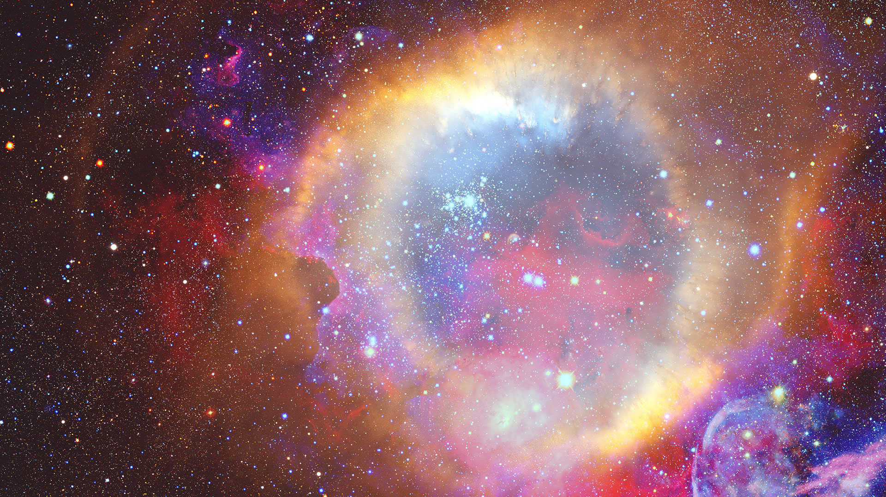

Lemont, Illinois

Located in Lemont, Illinois.
Scientists at Argonne National Lab study nuclear reactions that occur in stars. They study how the elements in the universe were created and how they evolved. They try to understand how stars are created, die, produce energy, and create our elements. They primarily conduct their research with the Argonne Tandem Linac Accelerator System (ATLAS), a linear accelerator for heavy ions. The energy level they use probes the properties of the nucleus—which is the core of matter and what helps fuel stars.
How are stars born and how do they die? How do they produce energy and create our elements?
Nuclear astrophysics: Argonne scientists study stellar evolution and the origin of elements in stars.
17MeV: the maximum energy per nucleon delivered by ATLAS. This gives ions enough velocity to reach the Coulomb barrier, which otherwise pushes two like-charged nuclei apart. Overcoming the Coulomb barrier lets scientists force nuclei to collide, fuse, and undergo reactions; in turn, they can study rare astrophysical phenomena.
Sources:
https://www.anl.gov/phy/nuclear-astrophysics
https://www.anl.gov/atlas
https://science.osti.gov/np/Facilities/User-Facilities/ATLAS